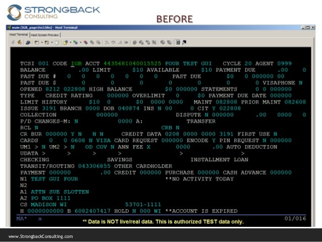

At my most recent professional job I worked as a Fraud Anaylyst for a bank based in the UK. My main role was to investigate suspicous activity and minimize financial loss. In my day to day role I would analyse accounts and contact customers over the phone.
At this job I used a system called TS2

Example Of TS2This system took time to learn. At a glance it can look very confusing, simular to codeing. Although after a few months I mastered the controls. This motivates me when learning to code.